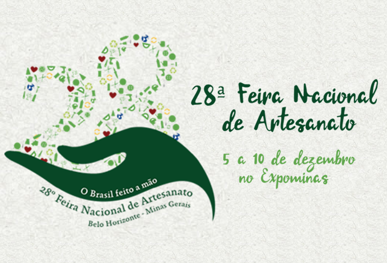
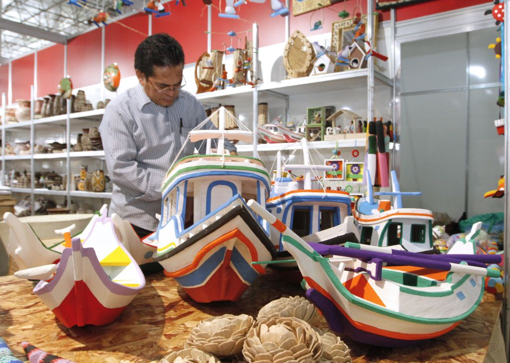
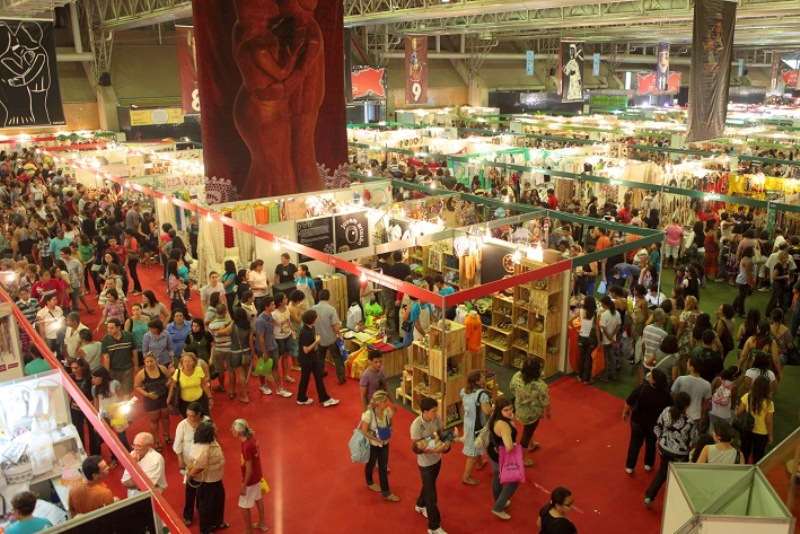

<ion-header>
  <ion-navbar color="secondary">
    <button ion-button menuToggle>
      <ion-icon name="menu"></ion-icon>
    </button>
    <ion-title>Feira Nacional de Artesanato</ion-title>
  </ion-navbar>
</ion-header>

<ion-content padding style="background-image:url('../../assets/img/background.jpg')">
  <ion-slides style="height: initial;" pager>
    <ion-slide>
      
    </ion-slide>
  
    <ion-slide>
      
    </ion-slide>
  
    <ion-slide>
      
    </ion-slide>
  </ion-slides>

  <button (click)="goSobre()" color="default" ion-button block icon-left>
    <ion-icon name="ios-information-circle-outline"></ion-icon>
    Sobre
  </button>
  <button (click)="goVotacao()" color="secondary" ion-button block icon-left>
      <ion-icon name="md-star-outline"></ion-icon>
    Votação
  </button>
  <button (click)="goProgramacao()"  class="btn-programacao" ion-button block icon-left>
    <ion-icon name="md-time"></ion-icon>
    Programação
  </button>
  <button (click)="goExpositores()" class="btn-expositores" ion-button block icon-left>
    <ion-icon name="md-people"></ion-icon>
    Expositores
  </button>
  <button (click)="goFotos()" class="btn-fotos" ion-button block icon-left>
    <ion-icon name="ios-images-outline"></ion-icon>
    Fotos
  </button>
  <button (click)="goMapa()" color="danger" ion-button block icon-left>
    <ion-icon name="md-map"></ion-icon>
    Mapa do Evento
  </button>
  <button (click)="goNoticias()" color="default" ion-button block icon-left>
    <ion-icon name="ios-notifications-outline"></ion-icon>
    Notícias
  </button>
</ion-content>
